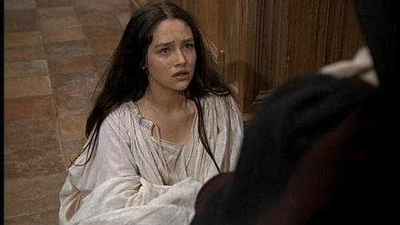

What is a youth 가사 해석
게시: 2018-04-11T19:54:58+09:00
요즘 젊은 분들도 올리비아 핫세가 나온 영화 로미오와 줄리엣을 모르시는 분은 없으실 겁니다. 이 영화는 올리비아 핫세의 미모 외에도 주제곡인 'What is a youth'가 굉장한 인기를 끌었습니다. 지금 들어봐도 그 멜로디나 가사 모두 전혀 촌티나지 않습니다. 고전이 뭐 별 거 있겠습니까 ? 시대를 가로질러 아름다움이 느껴지는 것이 바로 고전이지요.

이 'What is a youth'는 오리지널 버전 뿐만 아니라 여러 사람이 불렀고, 다 나름대로의 아름다움이 있습니다. 그런데 몇년 전에 라디오에서인가 어디서인가 여성 버전의 'What is a youth'를 들었는데, 정말 특이하면서도 매혹적인 목소리와 발성이었습니다. 전에 페북에서인가 어떤 분이 '요즘 젊은 가수들은 한국말을 영어처럼 발음하는 경향이 있다'라며 탄식을 하는 것을 읽은 적이 있는데, 그 여가수가 딱 그런 식이었어요. 분명히 영어권 사람인 것 같은데, 부분부분에서는 마치 족보를 알 수 없는 외국인이 부르는 것처럼 발음이 약간 이상한데, 그게 또 너무 매력적이더라구요. 문제는 그 노래를 대체 누가 부른 것인지 알 수가 없다는 것이었습니다. 네이버 뮤직으로 검색해봐도 알 수가 없고, 아예 맘먹고 유튜브를 샅샅이 뒤졌는데도 나오지 않았습니다.
그렇게 반쯤 포기하고 있다가, 최근에 어느 영화 음악 소개 라디오 프로그램에서 그 여가수 목소리로 배트 미들러의 'The Rose'가 흘러 나왔습니다. 놀랍게도, 송승헌이 주연을 맡은 2014년작 한국영화 '인간중독'의 삽입곡이더군요. 덕분에 그 여가수가 누군지 알아냈고, 'What is a youth'의 유튜브 URL도 찾았습니다.
여가수는 역시나 외국인, 그것도 일본인이었습니다. 테시마 아오이(手嶌葵, Teshima Aoi)라는 이름의 가수겸 성우더군요.
아래 유튜브 링크를 통해 테시마 아오이의 What is a youth를 꼭 한번 들어보세요. 저는 오리지널 버전보다 이 버전의 곡 해석과 감정 처리가 훨씬 더 마음에 듭니다. 특히 'the world wags on'이라는 부분에서 wag이라는 단어가 아름답지 못하다고 생각했는지 'the world walks on'으로 바꾼 것이 눈에 띄는데, 그것도 귀엽네요.
무엇보다 이 노래는 원작 가사의 아름다움이 독보적이라서, 그 가사의 처절함과 덧없음을 생각하며 이 노래를 들으면 더욱 좋습니다. 저는 특히 Death will come soon to hush us along Sweeter than honey and bitter as gall 라는 부분의 가사와 멜로디가 매우 절절하게 느껴집니다. 보통 라임은 소절 끝부분에서 맞추게 되어 있는데, 이 부분에서는 sweeter와 bitter로 맞춘 것이 매우 특이합니다.

What is a youth?
Impetuous fire
What is a maid?
Ice and desire
The world walks on
청춘이란 무엇인가 ?
충동의 불꽃
아가씨란 무엇인가 ?
얼음에 싸인 욕망
세상은 상관없이 돌아간다네
A rose will bloom
It then will fade
So does a youth
So does the fairest maid
장미는 찬란히 피어나
곧 덧없이 시들지
청춘도 그러하고
세상에서 제일 어여쁜 아가씨도 마찬가지라네
Comes a time when one sweet smile
Has its season for awhile
Then Love's in love with me
때로는 사랑스러운 미소 한번이
온 계절을 사로잡는 때도 있지
그러면 그이도 나와 사랑에 빠질텐데
Some may think only to marry
Others will tease and tarry
Mine is the very best parry
Cupid he rules us all
어떤이는 그저 결혼할 생각 뿐이고
다른이는 짖궂게 애간장만 태우지
내 상대는 밀당의 고수
우리 모두는 사랑의 노예일 뿐
Caper the caper; sing me the song
Death will come soon to hush us along
Sweeter than honey and bitter as gall
Love is a task and it never will pall
Sweeter than honey and bitter as gall
Cupid he rules us all
장난치며 뛰어요, 내게 노래를 불러줘요
곧 죽음이 다가와 우리를 데려갈테니
꿀보다 달콤하고 담즙보다 쓴
사랑은 절대 싫증나지 않는 것
꿀보다 달콤하고 담즙보다 쓴
우리 모두는 사랑의 노예일 뿐
A rose will bloom, it then will fade
So does a youth
So does the fairest maid
장미는 찬란히 피어나
곧 덧없이 시들지
청춘도 그러하고
세상에서 제일 어여쁜 아가씨도 마찬가지라네